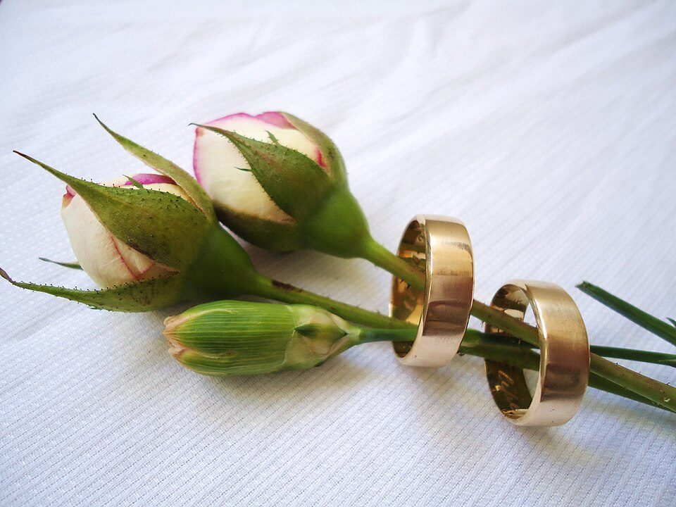
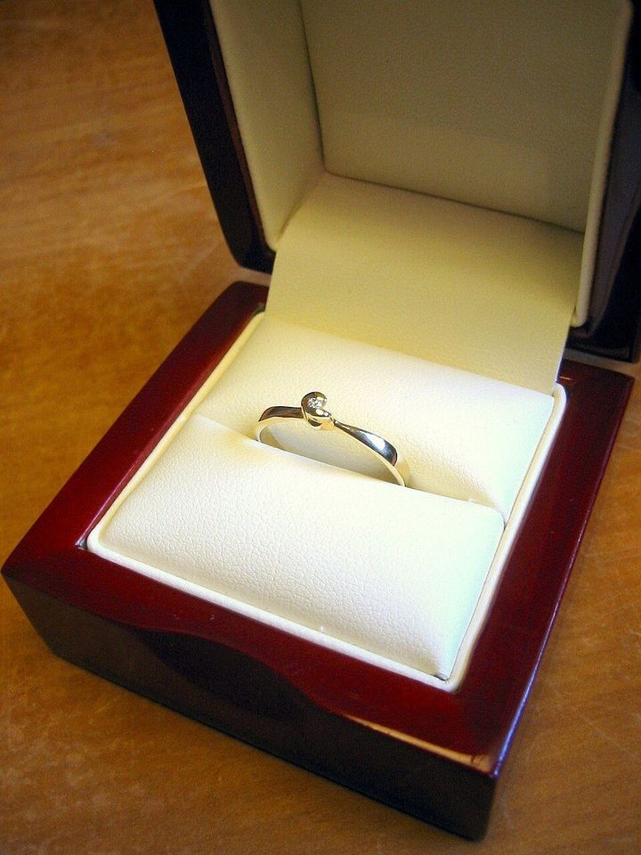
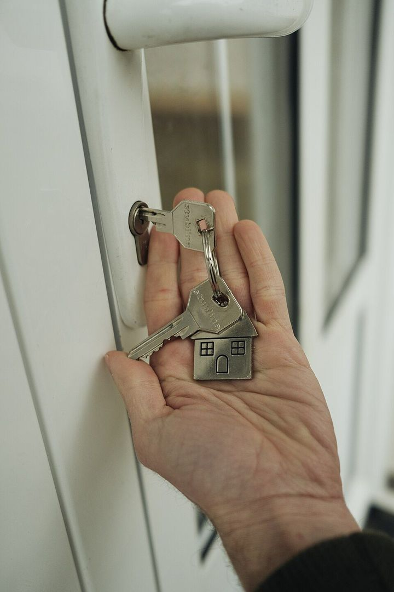
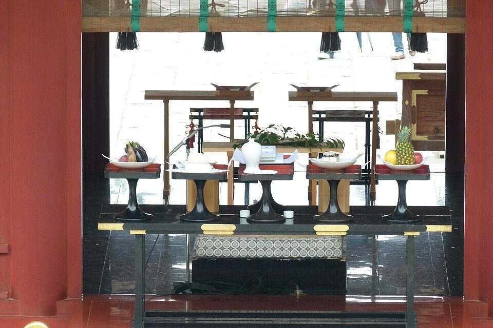

付き合ってから結婚するまでの流れ：顔合わせ・婚姻届・結婚後の手続きと、期間・お金の目安
要点まとめ
付き合い始めてから結婚するまでには、法律で決まっている手続きと、家庭や地域の慣習で行うことがあります。この記事では、交際から新生活までを段階に分け、やること・期間やお金の目安・法律の決まりをまとめました。法律と手続きは民法・戸籍法と自治体の案内、統計は厚生労働省などの公的な資料によります。プロポーズや結婚式などの慣習は、民間の調査の数字を参考として示します。慣習の行事は、しない人も少なくありません。

数字で見る、交際から結婚まで
2025年の婚姻は489,158組
婚姻件数は、2024年・2025年と2年続けて増えた
厚生労働省の人口動態統計（確定数、2026年9月30日公表）によると、2025年の婚姻件数は489,158組で、前年より4,066組増えました[5]。婚姻件数は1972年の109万9984組がピークで、2002年以降は減る傾向でしたが、2024年からは2年続けて増えています（概数の概況）[8]。
平均初婚年齢は、夫31.0歳・妻29.7歳
2025年（概数）。前年より少し下がった
2025年の平均初婚年齢は夫が31.0歳、妻が29.7歳で、どちらも前年より下がりました[8]。初婚の妻の年齢で最も多いのは、10年ごとに比べても各年とも27歳です[8]。
交際期間の平均は4.3年（国の調査）
出会いは「職場や仕事で」21.4%、「ネットで」13.6%
国立社会保障・人口問題研究所の第16回出生動向基本調査（2021年）によると、夫婦の平均交際期間は4.3年で、前回（2015年）とほぼ同じでした（生命保険文化センターの紹介による）[6]。出会いのきっかけは、2018年7月〜2021年6月に結婚した初婚どうしの夫婦で「職場や仕事で」が21.4%、「ネットで」が13.6%でした。2015年7月〜2018年6月の結婚では、それぞれ28.2%と6.0%です[6]。
5〜10年未満は、1年ごとの値（5.0、6.2、2.3、2.2、2.4）を筆者が合計したもの（5年分の幅）。無回答0.6%は除いています[3]。
見方: 株式会社リクルートの「結婚マーケット調査2025」（2026年1月22日発表、インターネット調査）では、結婚までに付き合った期間の平均は57.5か月でした[3][9]。出会い方によって差があり、恋活・婚活サイトやアプリで出会った人（214人）は平均32.3か月、同じ会社や職場で出会った人（212人）は平均61.6か月です[3]。国の調査とは対象や聞き方が違うので、そのまま比べることはできません。
交際から新生活までの流れ
民法は、婚姻は戸籍法の定めに従って届け出ることで効力が生じる、としています[1]。つまり、法律上の結婚に必要なのは婚姻届で、プロポーズ・両家の顔合わせ・結納・結婚式は、法律で決まった手続きではありません。流れを図にすると、次のようになります。
補足：法律で決まっていることと、任意のこと
結婚を決める：プロポーズ・あいさつ・顔合わせ
見方: リクルートの「結婚マーケット調査2025」の既婚編（インターネット調査、2025年5月12日〜20日、2024年4月〜2025年3月に結婚した全国20〜49歳の男女821人）の結果です[9]。両家の顔合わせをした人は約4分の3、結納をした人は約4分の1でした[3]。「婚約パーティーなど」は、結婚（挙式）前の祝賀パーティー・婚約パーティーです[3]。
婚約は、民法に条文がない
ただし、正当な理由のない破棄は賠償の責任を負う
法テラス（日本司法支援センター）は、正当な理由がある場合は、責任を負わずに婚約を解消できると説明しています[10]。一方、正当な理由がないのに婚約を破棄した場合は、婚約不履行として、慰謝料などで損害を賠償しなければならないとしています[10]。

プロポーズと指輪
婚約指輪の費用は平均43.8万円（用意した人、参考）
同じ調査で、プロポーズの有無を聞くと、自分からした人が42.5%、相手からされた人が43.8%、なかった人が13.7%でした[3]。婚約記念品として指輪を用意し、金額を答えた人（258人）の費用は平均43.8万円で、30〜40万円未満が18.7%と最も多くなっています[3]。資料には、金額が税込か税抜かは書かれていません。
親へのあいさつと、両家の顔合わせ・結納
顔合わせは74.2%、結納は26.5%（民間調査）
両家の顔合わせをした人は74.2%、結納をした人は26.5%で、結納については、しなかった人（するつもりでも時期や内容が決まっていない人を含む）が73.5%でした[3]。顔合わせや結納の費用・時期の目安は、今回調べた資料には見つかりませんでした。
婚姻届を出す
婚姻の条件と、届出で決まること
男女とも18歳から。届け出ることで効力が生じる
民法は、婚姻は18歳にならなければできないとし、届出は夫婦になる2人と成年の証人2人以上が署名した書面か、口頭でするとしています[1]。夫婦は、婚姻のときに決めたとおり、夫か妻の氏を名乗ります[1]。婚姻届には、夫婦が名乗る氏を書きます[11]。
| 確かめること | 内容 |
|---|---|
| □ 2人とも18歳以上か | 婚姻は18歳から（民法731条）[1] |
| □ 届書の用紙 | 様式は全国共通で、ほかの市区町村の用紙も使える[2] |
| □ 夫と妻の署名 | どちらも必要。婚姻後の氏で署名するのは、不備の例とされている[2] |
| □ 成年の証人2人 | 署名のほか、生年月日・住所・本籍も書く。氏や名の省略は不備になる[2] |
| □ 夫婦の氏 | 夫と妻のどちらの氏にするか、チェックを忘れない[1][2] |
| □ 筆記用具 | 黒インク。鉛筆や消せるボールペンは使わない[2] |
| □ 本人確認書類 | 窓口に行く人の運転免許証など[2] |
| □ 戸籍謄本 | 2024年3月1日から原則不要。戸籍がコンピュータ化されていない場合は必要[2][12] |
| □ 印鑑 | 押印は任意（2021年9月1日から）[2] |
| □ 出す場所 | 夫か妻の本籍地、または所在地の市区町村[11][2] |
目黒区の案内をもとに、提出から受理までの流れをまとめました[2]。
- 前もって
できれば窓口で、内容を事前に見てもらう
夜間・休日の受付では内容を確認できないため[2]
- 提出
平日の窓口か、夜間・休日の受付に出す
届出期間はなく、いつ出してもよい[2]
- 受理
審査して受理されると、法律上の夫婦になる
夜間・休日に預けた届書は翌開庁日に審査。受理日は原則として預けた日[2]
- 6営業日目から
受理証明書を受け取れる
届出日の翌日から数えて6営業日目から（目黒区）[2]
- そのあと
住所の変更などは、別に手続きする
婚姻届だけでは住所は変わらない[2]
記念日や縁起のよい日は、窓口が混む
11月22日（いい夫婦の日）や大安などは待ち時間が長い
目黒区は、大安・天赦日など縁起がよいとされる日、大型連休明け、8月8日のように同じ数字が並ぶ日、七夕（7月7日）、いい夫婦の日（11月22日）、12月24日・25日は窓口が大変混み合うとしています[2]。
婚姻届のあとの手続き
婚姻届を出しても、住所は変わりません[2]。一緒に住み始めたり、氏が変わったりした人は、次の手続きがあります。期限は、法律や各機関の案内によるものです。
| 手続き | 期限 | 窓口 | ポイント |
|---|---|---|---|
| 住所の届出（転入届・転居届） | 引っ越した日から14日以内[4] | 市区町村 | ほかの市区町村からは転入届、同じ市区町村の中は転居届[4] |
| マイナンバーカードの記載変更 | 変更から14日以内[13] | 市区町村 | 署名用電子証明書は失効するので、別に発行の手続きが必要[13] |
| 旧姓の併記（希望する人） | ― | 市区町村 | 住民票やマイナンバーカードに、旧姓を1人1つ併記できる[14] |
| 運転免許証 | 速やかに[15] | 運転免許センターや警察署（茨城県の例）[16] | 氏名・本籍の変更は本籍が載った住民票。手数料は無料（茨城県）[16] |
| パスポート | ― | パスポートの窓口、オンライン | 氏名が変わったら「切替申請」か「残存有効期間同一申請」。ローマ字が同じなら不要[17] |
| 健康保険の被扶養者（協会けんぽ） | 事実発生から5日以内[18] | 配偶者の勤め先を通して日本年金機構へ | 健康保険組合の人は、勤め先に問い合わせる[18] |
| 国民年金の第3号被保険者 | 扶養されることになった日から14日以内[19] | 配偶者の勤め先 | 健康保険の被扶養者の届出と一緒に出す[19] |
| 印鑑登録 | ― | 市区町村 | 氏が変わると自動的に廃止される。必要なら登録し直す（目黒区）[2] |
健康保険の被扶養者と第3号被保険者は、会社員など（厚生年金の被保険者）の配偶者に扶養される人の手続きです[19][18]。「―」は、今回の資料で期限が確かめられなかったものです。

ほかの市区町村から移ったら、マイナンバーカードは「継続利用」
転入届から90日以内に手続きしないと失効する
杉並区は、区外から転入した場合は、券面の更新ではなく「継続利用」の手続きが必要で、転入届の日から90日以内にしないとカードが失効し、使えなくなると案内しています[13]。引っ越しの費用や時期の目安は、引っ越し費用を抑える方法の記事にまとめています。
パスポートは、ローマ字が変わるかで決まる
住所だけ変わったときは、申請はいらない
神奈川県のパスポートの案内では、結婚などで戸籍上の氏名が変わった人は「切替申請」か「残存有効期間同一申請」をします。氏が変わってもローマ字の表記が変わらない場合（例: ONO）や、住所だけが変わった場合は、申請はいりません[17]。
配偶者控除の、配偶者の所得の目安
2026年分から、配偶者の給与の上限は136万円に
国税庁によると、配偶者控除の対象は、その年の12月31日の時点で、民法の規定による配偶者で、生計が同じで、年間の合計所得金額が62万円以下（2025年分は58万円以下）の人です[20]。内縁関係の人は対象になりません[20]。納税者本人の合計所得金額が1,000万円を超える場合は、配偶者控除は受けられません[20]。年末調整の書き方は、年末調整の記事にまとめています。
結婚式と新生活のお金

「披露宴など」は披露宴・ウエディングパーティー、「食事会」は結婚を機とした食事会（会食スタイルの結婚式や親族中心の食事会）です[3]。
式も食事会も写真もしなかった人は26.5%
何らかのウエディングイベントをした人は73.5%
同じ調査で、挙式・披露宴・食事会・写真撮影のどれもしなかった人は26.5%でした[3]。何らかのウエディングイベント（写真撮影を含む）をした人は73.5%です[9]。結婚式などをした人への調査（トレンド編）では、「定番やしきたりにとらわれず、自分たちの価値観に合った自由なやり方をすればよい」と思う人が74.5%でした[9]。
挙式と披露宴をした人の費用は、平均298.6万円
招待客は平均57.2人。ご祝儀は平均180.1万円（参考）
結婚式などをした人への調査（2024年4月〜2025年3月に国内で挙式・披露宴・食事会のいずれかをした全国20〜49歳の男女817人）では、挙式と披露宴・ウエディングパーティーの両方をした人の費用の総額は平均298.6万円、最も多い価格帯は300〜350万円でした[9]。同じ人たちのご祝儀の平均は180.1万円です[3]。結婚のために親からの援助があった人は65.9%でした[3]。資料には、金額が税込か税抜かは書かれていません。
新婚の住まいと引越しの補助（市区町村）
夫婦とも29歳以下なら上限60万円、39歳以下は30万円
こども家庭庁の交付金（令和8年度）は、講座などを受けた新婚世帯に、自治体が家賃や引越費用などを補助する取り組みを支援しています。名前は「結婚・妊娠・共育ての相談機会提供・支援プログラム」です[21]。対象は夫婦とも婚姻日の年齢が39歳以下で、世帯所得500万円未満の世帯。補助の上限は、夫婦とも29歳以下なら60万円、それ以外は30万円です[21][22]。
親や祖父母からの結婚・子育て資金の贈与
2027年3月31日までの贈与は、1,000万円まで非課税
国税庁によると、18歳以上50歳未満の人が、父母や祖父母などから結婚・子育て資金として、金融機関などとの契約にもとづいて贈与を受けた場合、1,000万円までは贈与税がかかりません（2015年4月1日〜2027年3月31日）[23]。前年の合計所得金額が1,000万円を超える人は対象外です[23]。国税庁のパンフレット（令和5年5月版）では、このうち結婚に際して支払う費用は300万円が限度とされています[24]。
家を買うかどうかを考えるときは、家を買うときに考えることの記事、20代で使える制度は20代のうちにやっておきたいことの記事にまとめています。
2024〜2026年に変わったこと
- 2024年3月1日
婚姻届などに、戸籍謄本の添付が原則不要に
- 2024年4月1日
女性の再婚禁止期間を廃止
- 2025年3月24日
パスポートの申請が、全面的にオンラインでできるように
申請分から[17]
- 2025年5月26日
戸籍に、氏名の振り仮名が記載されることに
- 2025年12月10日
旧姓の併記で、戸籍謄本などの持参が原則不要に
- 2026年7月1日
パスポートの「残存有効期間同一申請」は18歳以上が対象に
申請分から[17]
- 2026年12月1日
配偶者控除の、配偶者の所得の上限が62万円に
施行。2026年分から適用（給与だけなら136万円以下）[20]
今回確認できなかった点
- 第17回出生動向基本調査（2026年9月公表）の交際期間・出会いのきっかけ（研究所のページを開けなかった）
- 婚姻届に振り仮名を書く欄があるかと、婚姻のときの振り仮名の扱い（法務省のページを開けなかった）
- 両家の顔合わせ・結納の費用、結婚式の準備期間の目安
- 結婚新生活の補助を実施している市区町村の全国の一覧
- 結婚に際して支払う費用の上限300万円が、2026年時点の国税庁の資料でも同じか
- 夫婦の氏（選択的夫婦別姓など）をめぐる国会の法案の中身と、その後の扱い
出典（25件）
閲覧日はいずれも2026年11月23日
- 民法（e-Gov法令検索）
- 婚姻届（東京都目黒区）
- 結婚マーケット調査2025 報告書（PDF）（株式会社リクルート（リクルートブライダル総研））
- 住民基本台帳法（e-Gov法令検索）
- 令和7（2025）年人口動態統計（確定数）の概況（厚生労働省）
- 結婚年齢や出会いのきっかけは？（第16回出生動向基本調査の紹介）（公益財団法人 生命保険文化センター）
- 民法改正に伴う嫡出推定制度の見直しについて（大阪府堺市）
- 令和7（2025）年人口動態統計月報年計（概数）の概況（厚生労働省）
- 結婚マーケット調査2025 概要（2026年1月22日、PDF）（株式会社リクルート（リクルートブライダル総研））
- 家事：婚約、結婚、離婚（やさしい日本語）（日本司法支援センター（法テラス））
- 戸籍法（e-Gov法令検索）
- 婚姻届等をご提出いただく際に戸籍証明書の添付が不要になります（東京都江東区）
- マイナンバーカードの記載事項（住所、氏名など）に変更があったときは（東京都杉並区）
- 住民票、マイナンバーカード等への旧氏の併記について（総務省）
- 道路交通法（e-Gov法令検索）
- 運転免許証の記載事項変更手続（茨城県警察）
- パスポート：氏名や本籍などに変更があったとき（神奈川県）
- 従業員（健康保険・厚生年金保険の被保険者）が家族を被扶養者にするとき、被扶養者に異動があったときの手続き（日本年金機構）
- よくある質問：会社を退職し、第2号被保険者（厚生年金被保険者）の被扶養配偶者になる予定ですが、どのような届出が必要ですか。（日本年金機構）
- No.1191 配偶者控除（国税庁）
- 地域少子化対策重点推進交付金（令和8年度）の概要（PDF）（こども家庭庁）
- 地域少子化対策重点推進交付金実施要領（令和8年度、PDF）（こども家庭庁）
- No.4511 直系尊属から結婚・子育て資金の一括贈与を受けた場合の非課税（国税庁）
- 父母などから結婚・子育て資金の一括贈与を受けた場合の贈与税の非課税制度のあらまし（令和5年5月、PDF）（国税庁（税務署））
- 戸籍への振り仮名記載について（富山県富山市）
写真・画像の出典（6件）
- 白い布の上に置いた2つの結婚指輪とバラのつぼみ
写真: Mauro Cateb／Wikimedia Commons（CC BY-SA 3.0） - 小さなダイヤモンドの付いた指輪と、赤いケース
写真: Conrad Nutschan／Wikimedia Commons（CC BY-SA 3.0） - 市役所の窓口と待合の椅子（鹿児島県霧島市）
写真: Sharon Hahn Darlin／Wikimedia Commons（CC BY 4.0） - 家の鍵を手に、玄関の扉を開けるところ
写真: Shixart1985／Wikimedia Commons（CC BY 2.0） - 神社の結婚式の場に並ぶお供え（神奈川県鎌倉市の八幡宮）
写真: CoCreatr／Wikimedia Commons（CC BY-SA 2.0） - 紅白の水引を結んだ祝儀袋
写真: Ka23 13／Wikimedia Commons（CC BY-SA 4.0）